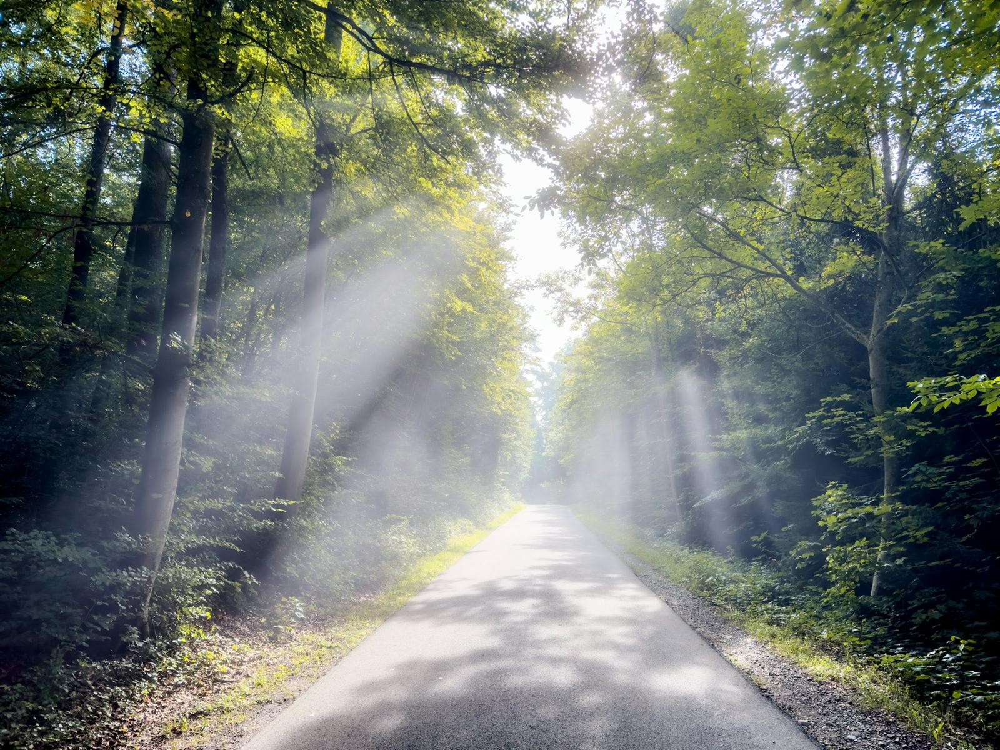
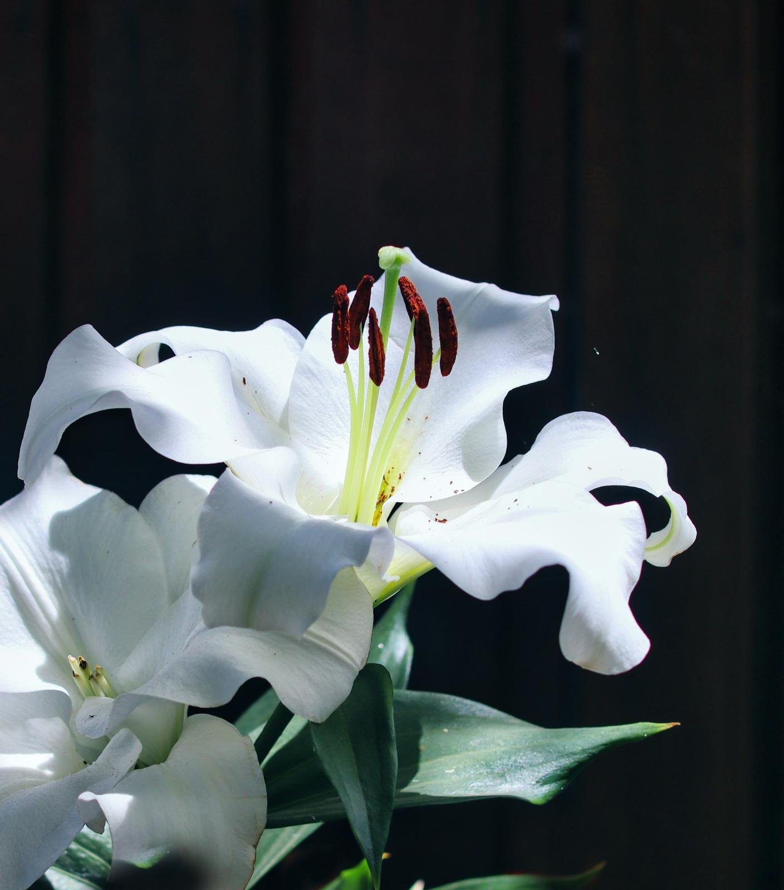
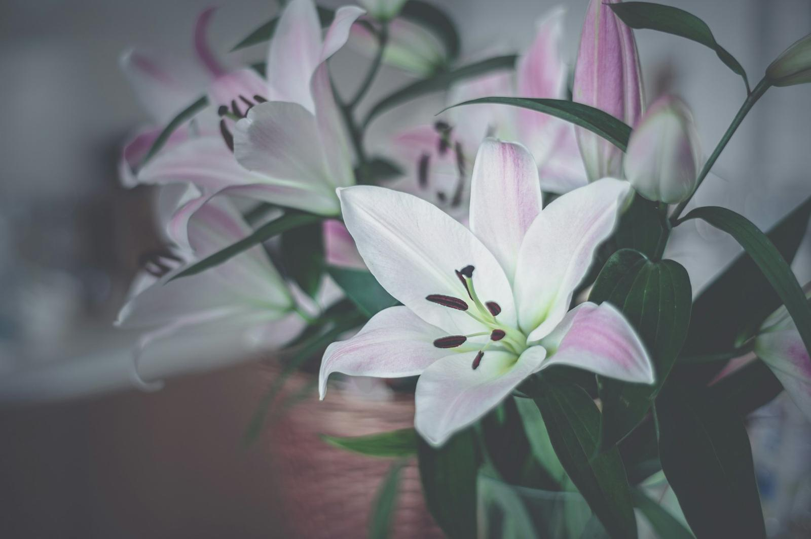
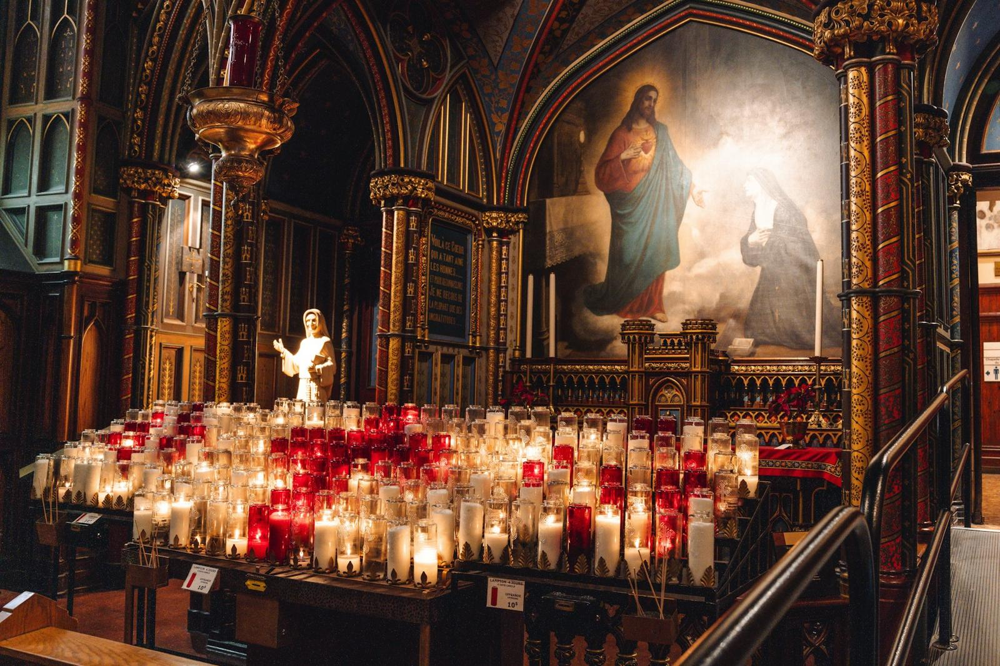
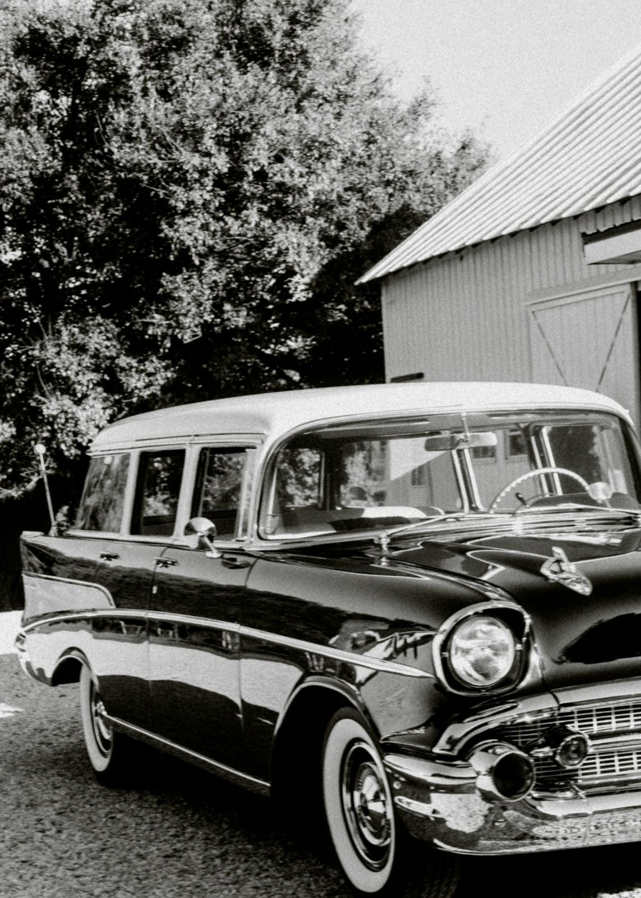
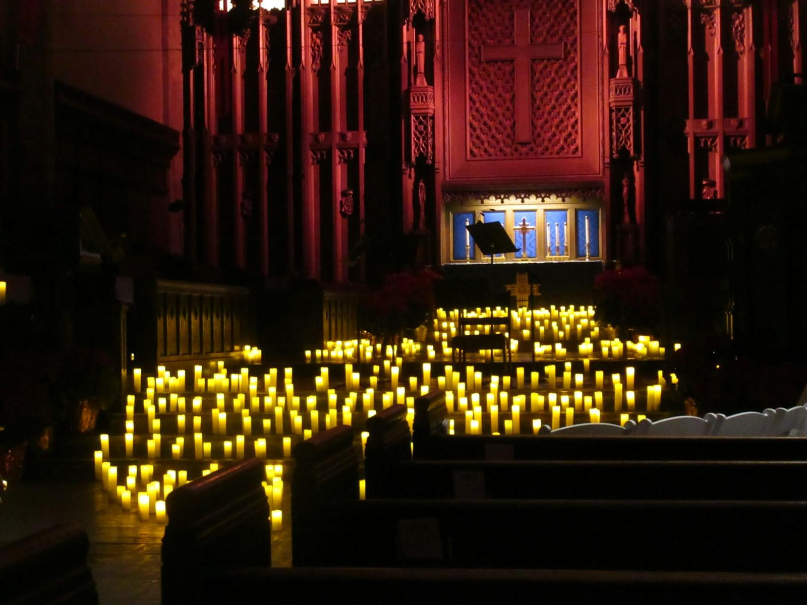
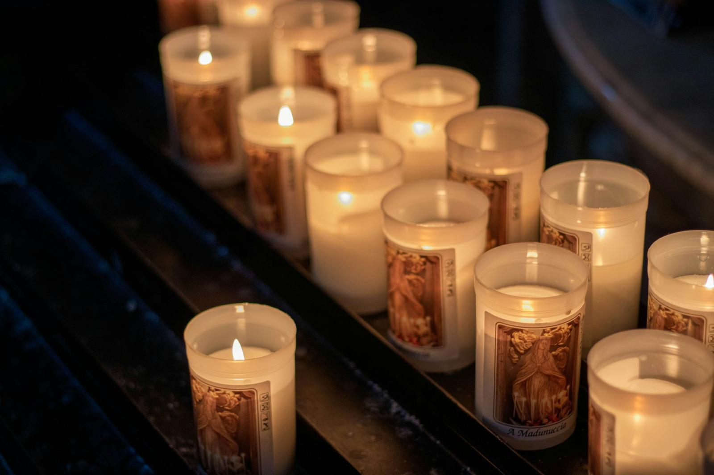
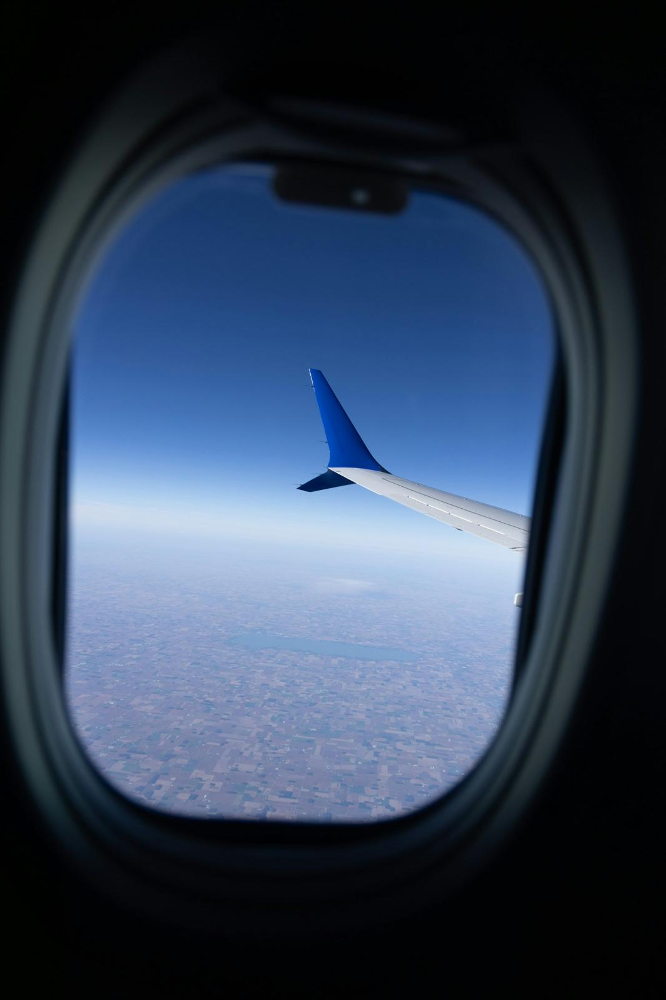
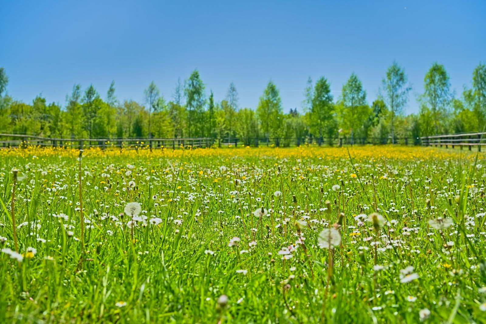

Casa Funerară PAX. Alături de tine în cele mai dificile momente, în Târgu Mureș.
Despre noi

Când suni la noi, nu dai peste un call-center. Dai peste oameni din Târgu Mureș care știu ce e de făcut, care respectă tradiția fiecărei familii și care nu te grăbesc.
Cum lucrăm
Suni. Îți răspunde un om, cu voce calmă. Consilierea e gratuită.
Certificatul de deces și toate drumurile administrative — le facem noi.

Pregătirea celui drag pentru priveghi, de specialiști certificați.

Un loc liniștit pentru rămas-bun, pentru familie și apropiați.
Coroane din flori proaspete, cu mesaj personalizat. Tel. 0741 115 864.

Autovehicule autorizate, plus sonorizare și echipamente pentru ceremonie.

Religioasă sau civilă, după tradiția familiei. Înhumare sau incinerare.

Catering și pachete pomană pentru familie și invitați.

Aducem acasă pe cei dragi plecați departe, cu toate formalitățile.
Nimeni nu se naște știind asta. Alege ușa potrivită și îți spunem exact următorii trei pași.

Scrie numele cuiva drag, apoi atinge pajiștea unde vrei să răsară floarea.
Acte necesare
O listă simplă, în ordinea în care îți vor fi cerute. Se salvează pe telefonul tău.
Ce spun familiile
Întrebări
Depinde de tipul de sicriu sau urnă, de servicii suplimentare (îmbălsămare, transport pe distanță lungă), de locul de veci, de ceremonie și de dată. Tarifele sunt adaptate fiecărei familii — sunați pentru o estimare gratuită.
Da. Acte, transport, pregătire, capelă, ceremonie, flori și masa de pomenire — tot evenimentul.
La incinerare, cenușa poate fi îngropată, așezată într-un columbarium sau împrăștiată. La înmormântarea tradițională, trupul e așezat în sicriu. Alegerea ține de preferințele personale și religioase.
De regulă: actul de identitate al solicitantului, certificatul de deces, uneori un certificat medical, certificatul de căsătorie dacă se adaugă numele soțului/soției și procură notarială dacă acționează altcineva. Confirmați lista cu administrația cimitirului.